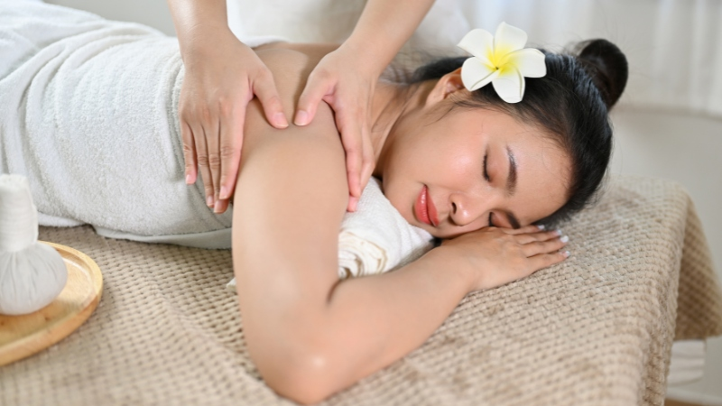
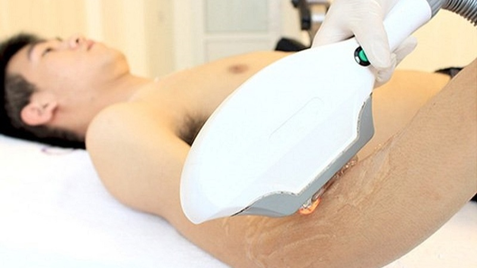
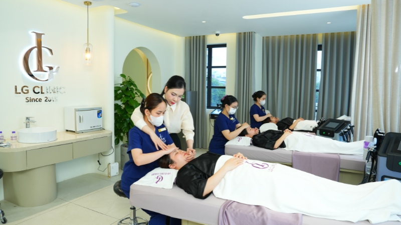

Trong những năm gần đây, ngành spa đã trở thành một trong những lĩnh vực được nhiều bạn trẻ quan tâm và lựa chọn theo học. Tuy nhiên, không ít người băn khoăn liệu việc học nghề spa có phải là một xu hướng bền vững hay chỉ là trào lưu nhất thời? Bài viết này sẽ phân tích chi tiết để giúp bạn có cái nhìn khách quan và đưa ra quyết định phù hợp.
Bối cảnh phát triển của ngành spa tại Việt Nam
Từ những năm 2010, ngành spa tại Việt Nam đã có sự phát triển đáng kể. Nếu như trước đây spa chỉ là dịch vụ cao cấp dành cho tầng lớp khá giả, thì hiện nay nó đã trở nên phổ biến và tiếp cận được với đại đa số người dân.
Những con số ấn tượng:
- Thị trường spa Việt Nam tăng trưởng 15 - 20% mỗi năm.
- Có hơn 10.000 cơ sở spa hoạt động trên toàn quốc.
- Doanh thu ngành đạt khoảng 2 - 3 tỷ USD/ năm.
- Tạo việc làm cho hơn 200.000 lao động.
Các yếu tố ảnh hưởng đến sự phát triển của ngành spa
Sự thay đổi trong nhu cầu làm đẹp và chăm sóc sức khỏe
Trước đây, khi nghĩ đến làm đẹp, người ta thường chỉ nghĩ đến việc trang điểm, làm tóc hay mặc đẹp. Tuy nhiên, với xu hướng hiện đại, khách hàng không chỉ muốn làm đẹp bên ngoài mà còn quan tâm đến sức khỏe tinh thần và thể chất. Các dịch vụ kết hợp giữa làm đẹp và thư giãn, trị liệu tâm lý như spa, massage, yoga ngày càng được ưa chuộng.

Ngoài ra, nhu cầu về các sản phẩm và liệu trình được thiết kế riêng cho từng cá nhân tăng cao. Khách hàng tìm kiếm các giải pháp dựa trên phân tích da chuyên sâu, phù hợp với tình trạng cụ thể của họ. Điều này cũng đặt ra câu hỏi về trình độ chuyên môn của các kỹ thuật viên và việc học spa có cần bằng cấp không.
Sự phát triển của công nghệ trong ngành spa
Một yếu tố quan trọng khác thúc đẩy sự phát triển của ngành spa chính là sự phát triển mạnh mẽ của công nghệ. Các thiết bị công nghệ cao ngày càng được áp dụng, giúp tăng hiệu quả và độ an toàn cho các liệu trình làm đẹp.
Nhờ vào những tiến bộ này, các cơ sở spa giờ đây có thể:
- Đa dạng hóa dịch vụ: Cung cấp các liệu trình chuyên sâu như trị mụn bằng ánh sáng sinh học, xóa nhăn bằng sóng RF,...
- Tăng hiệu quả và rút ngắn thời gian: Các công nghệ tiên tiến giúp mang lại kết quả rõ rệt chỉ sau vài lần thực hiện.
- Đảm bảo an toàn: Công nghệ không xâm lấn giúp khách hàng làm đẹp mà không cần phẫu thuật hay thời gian nghỉ dưỡng.
- Nâng cao trải nghiệm: Thiết bị hiện đại tạo cảm giác chuyên nghiệp, cao cấp, tăng sự hài lòng và lòng tin của khách hàng.
Sự thay đổi trong kinh tế và xã hội
Sự phát triển của nền kinh tế và thay đổi trong lối sống cũng đóng vai trò quan trọng trong việc thúc đẩy ngành spa.
- Thu nhập tăng cao: Khi mức sống được cải thiện, người dân có khả năng chi trả nhiều hơn cho các dịch vụ chăm sóc sức khỏe và làm đẹp.
- Lối sống bận rộn và căng thẳng: Áp lực công việc và cuộc sống đô thị khiến nhu cầu tìm kiếm nơi thư giãn, phục hồi năng lượng tại spa trở nên thiết yếu.
- Mở rộng đối tượng khách hàng: Thị trường làm đẹp không còn giới hạn ở nữ giới. Nam giới ngày càng quan tâm hơn đến chăm sóc da và các dịch vụ làm đẹp.

Học nghề spa: Xu hướng bền vững hay chỉ là trào lưu?
Nhìn từ các yếu tố trên, có thể khẳng định học nghề spa không chỉ là một trào lưu mà còn là một xu hướng phát triển bền vững trong ngành làm đẹp. Với sự gia tăng của nhu cầu làm đẹp và chăm sóc sức khỏe, ngành spa đang ngày càng phát triển và có tiềm năng lớn. Đặc biệt, khi lựa chọn học tại LG Spa Training Center, học viên sẽ được đào tạo bài bản với kiến thức chuyên môn vững vàng và kỹ năng thực hành thực tế. Tuy nhiên, để thành công trong nghề này, người học cần có đam mê cùng thái độ làm việc chuyên nghiệp.

Tóm lại, học nghề spa không chỉ mang lại một nghề nghiệp ổn định với mức thu nhập hấp dẫn, mà còn mở ra nhiều cơ hội phát triển trong một lĩnh vực đầy tiềm năng. Đây chính là một sự lựa chọn khôn ngoan và bền vững cho những ai đam mê và muốn gắn bó với ngành làm đẹp và chăm sóc sức khỏe.